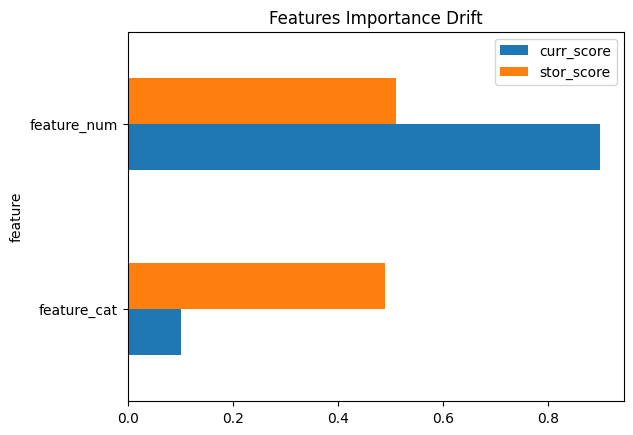

XAIDrift.plot¶
- XAIDrift.plot()¶
Genera e visualizza un grafico a barre orizzontali dell’importanza delle feature storiche e correnti.
Utilizza il DataFrame salvato nell’attributo xai_drift_report (generato da get_report) per creare una visualizzazione immediata delle feature storiche e correnti più importanti secondo il modello e il metodo di interpretazione scelto. Le feature sono mostrate sull’asse y e la loro importanza sull’asse x.
- Parameters:
None – (metodo basato sulle importanze delle feature generate nei metodi precedenti).
Note
Il grafico mostra le feature ordinate in base all’importanza storica, crescente dal basso verso l’alto.
Esempio:
>>> XaiD.plot()